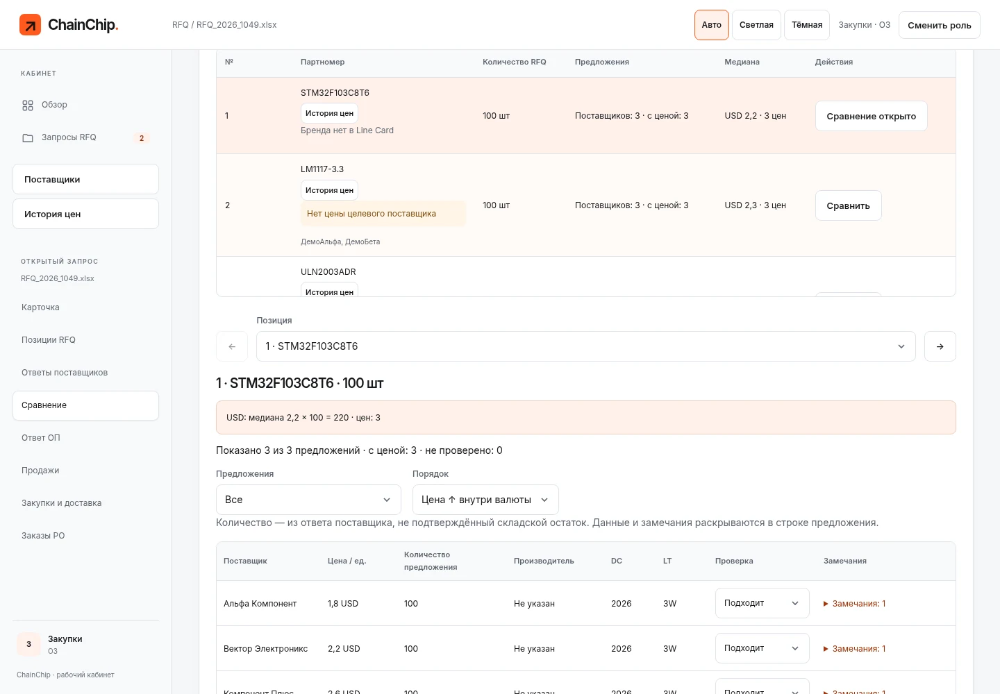
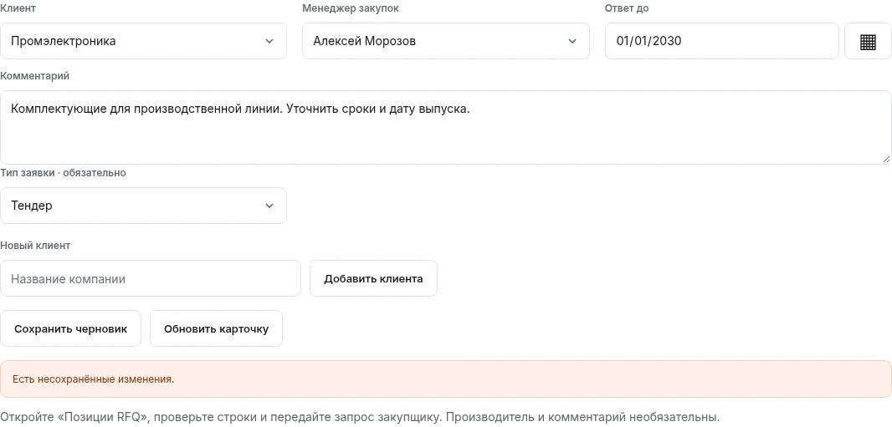

Повторные запросы
У подтверждения продажи и других операций есть идентификатор команды. Повтор запроса после потери ответа не должен создавать вторую запись.
Когда запрос клиента проходит через продажи и закупки, нужно сохранить договорённости по каждой позиции. В ChainChip рядом с запросом находятся предложения поставщиков, согласованный ответ, проданные количества и заказы.
Для просмотра выберите роль. Пароль не нужен. Данные вымышленные; общая песочница периодически очищается.
Кому передан запрос?
Что согласовано?
Что осталось
закупить?

Поставщики присылают разные файлы, отвечают не на все позиции и указывают цены в разных валютах. Клиент может согласовать только часть количества. По одному запросу появляются несколько ответов, продаж и закупочных партий.
В карточке запроса сохраняются ответственный закупщик, срок, исходные файлы и дальнейшие операции. Можно открыть позицию, сравнить предложения и увидеть, какие количества уже подтверждены продажами.
В процессе участвуют продажи, закупщик и руководитель закупок. У каждого свой кабинет и доступные действия.
Продажи загружают Excel, указывают клиента, закупщика и срок. Файл обрабатывается в фоне, ошибки видны по строкам.
ОП · ПродажиЗакупщик загружает ответы, проверяет совпадения и сравнивает цены внутри валют. Исходные файлы остаются доступны.
ОЗ · ЗакупкиИз выбранных данных формируется Excel-ответ. Продажи могут согласовать его или вернуть на доработку.
ОЗ → ОПКоличество фиксируется по позициям. Можно продать часть, вернуться к остатку и посмотреть историю отмен.
ОП · ПродажиПодтверждённые количества переходят в закупочные партии. Для поставщика создаются версии заказа и Excel-документы.
ОЗ · ЗакупкиРуководитель закупок видит запросы и отчёты, может контролировать назначения. Сотрудники работают со своими доступными запросами.
Сервер написан на C# / ASP.NET Core. В браузере — HTML, CSS и JavaScript. SQL Server хранит данные запросов и операций; исходные и сформированные файлы лежат в отдельном хранилище.
У подтверждения продажи и других операций есть идентификатор команды. Повтор запроса после потери ответа не должен создавать вторую запись.
При изменении данных проверяется версия записи. Конфликт возвращается сотруднику вместо молчаливой перезаписи чужого результата.
На сервере для финансовых значений и дробных количеств используется decimal. Продажи и закупочные остатки проверяются перед сохранением.
API проверяет сотрудника, роль, владельца запроса и назначение закупщика. Документы выдаются через проверку доступа, а не из публичной папки.
Из карточки можно перейти к позициям, предложениям, согласованию и закупке. При передаче запроса сохраняются назначение и срок.

Приложение работает на VPS и проходит ограниченный пилот. Перед использованием в конкретной компании нужно проверить её Excel-файлы, права сотрудников и объёмы обработки.
Выберите роль закупщика и откройте запрос с предложениями.
Затем
можно переключиться на продажи и пройти согласование.